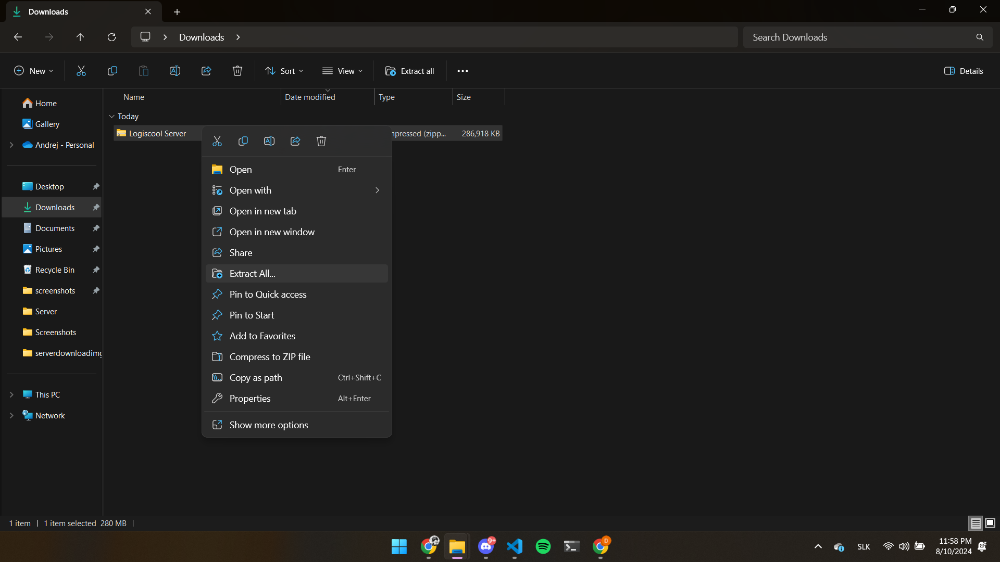
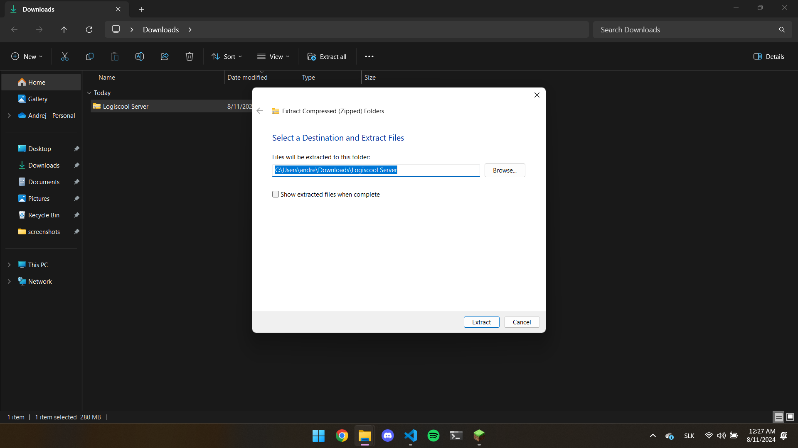
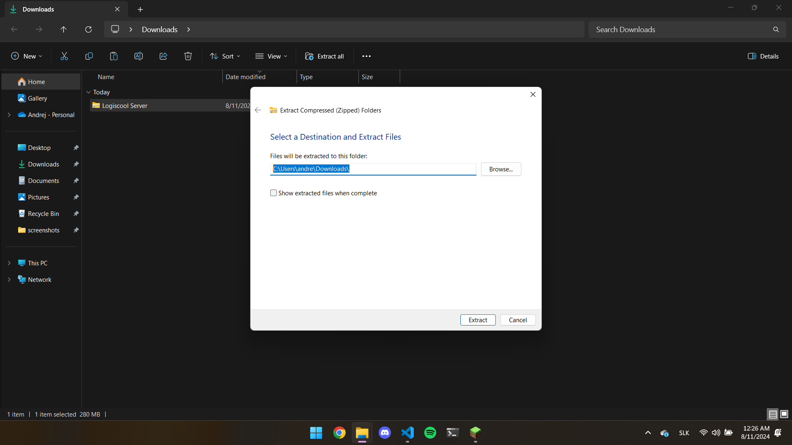
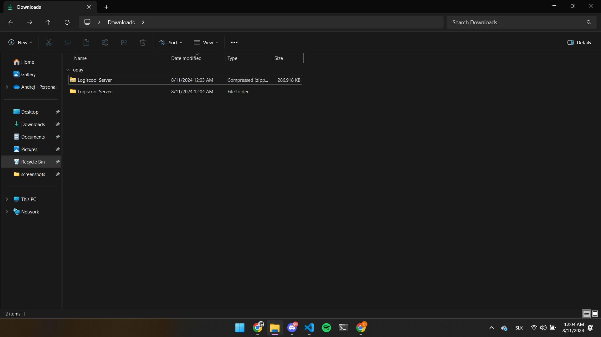
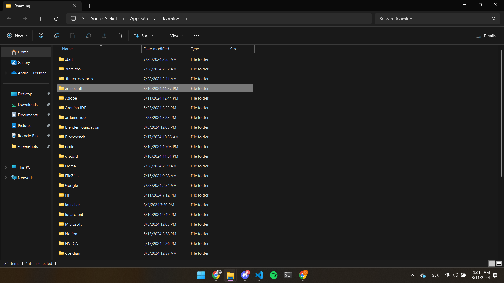
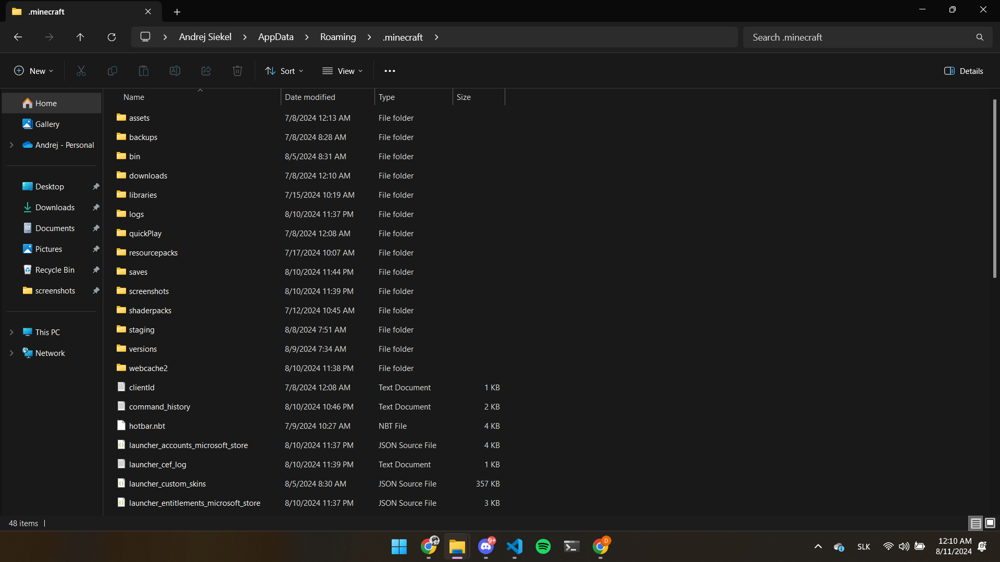
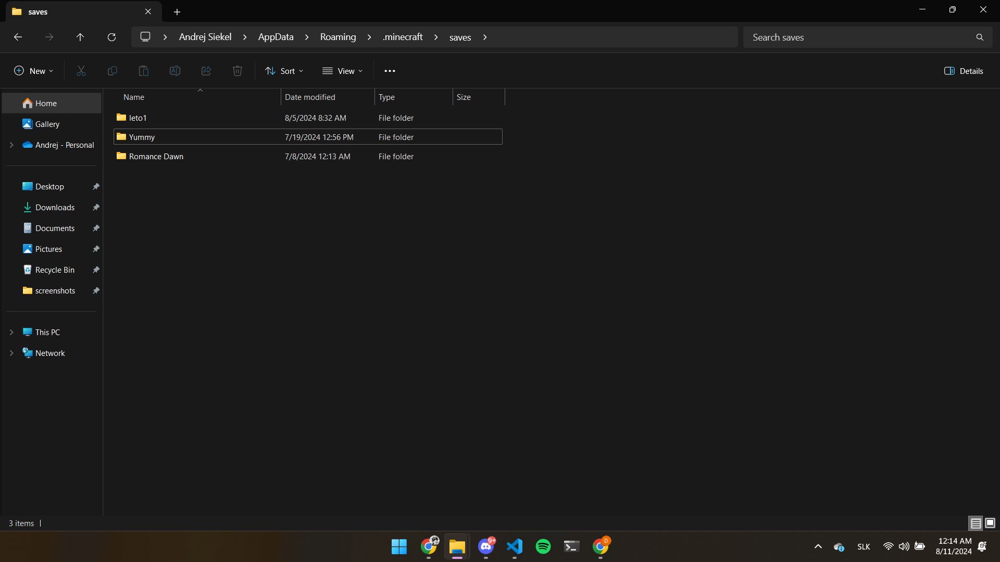
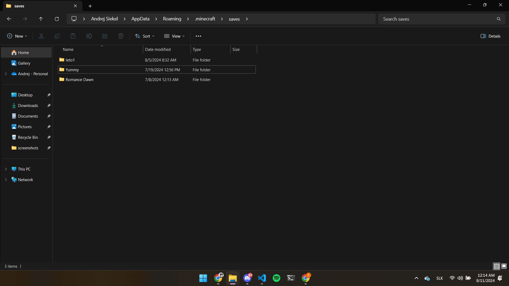
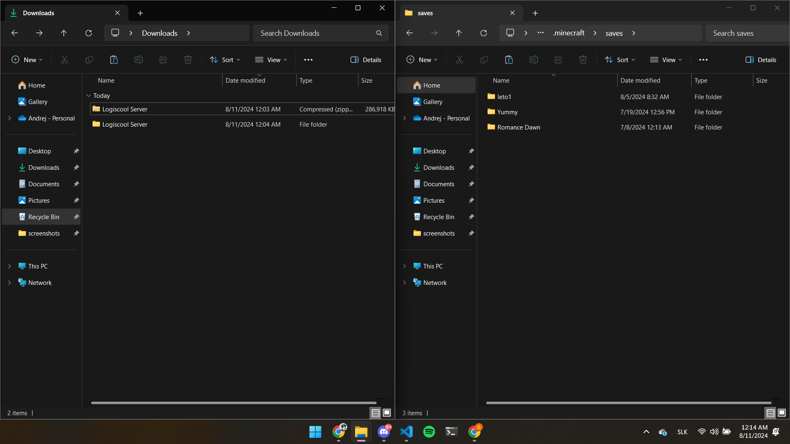
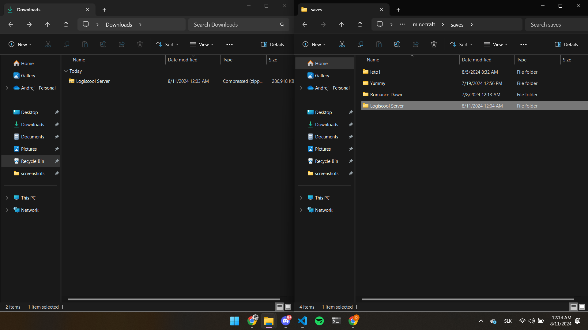

Intro
Pomocou tohto návodu by som vám rád ponúkol možnosť stiahnuť si svet na ktorom decká robili celý týždeň.
Pred tým ako začneme tak na to aby si decká zahrali potebukjú mať na počítačoch minecraft.
Nepotrebujú oficiálnu licenciu ale vysoko to odporúčam pretože sú alternatívy, ktoré to zvládnu aj zadarmo ale riskujete tam bezpečnosť. (Tlauncher)
Stiahnutie Sveta
Na stiahnutie sveta prvej skupinky (5.8.2024 - 9.8.2024) kliknite na nasledujúci odkaz: Stiahnuť
Na stiahnutie sveta druhej skupinky (19.8.2024 - 23.8.2024) kliknite na nasledujúci odkaz: Stiahnuť
Poďme to dať do minecraftu
Najprv stiahnutý súbor extrahujeme. Kliknite na neho pravým tlačidlom na myši a stlačte extrahovať všetko alebo nájdite na hornej lište tlačidlo extrahovať všetko
  Ak sme to spravili správne malo by to vyzerať takto.
Teraz môžeme toto okno na chvíľu minimalizovať.
Na pracovnej ploche stlačte naraz tlačidlo windows a klávesu R.
Ak sme to spravili správne v ľavom dolnom rohu by sa malo zobraziť okno do ktorého napíšeme %appdata%

Po stlačení enteru by sa malo zobraziť okno v ktorom nájdeme priečinok .minecraft a otvoríme ho.
 V priečinku .minecraft nájedme priečinok saves a otvoríme ho.
 

Teraz znova otvoríme okno stiahnutých súborov a posunieme ho vedľa saves okna.
Z stiahnutých súborov presunte extrahovaný priečinok do saves okna.
A to je všetko! Teraz môžete ísť do minecraftu a hrať si na svete, ktorý si decká vytvorili.
Outro
Dúfam, že návod pomohol a ďakujem deckám za super týždeň boli úplné zlatíčka.
Svet je na verzií 1.20.4. Hneď na spawne som deckám nehal ešte nejaké inštrukcie.
Vidíme sa o rok :3